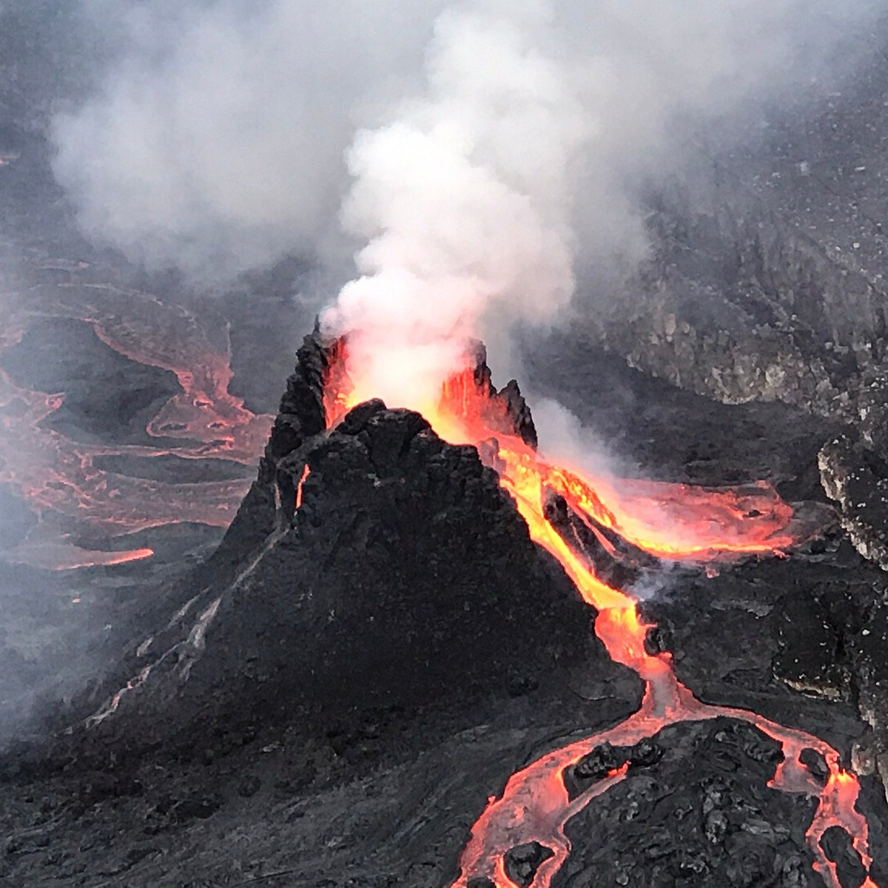
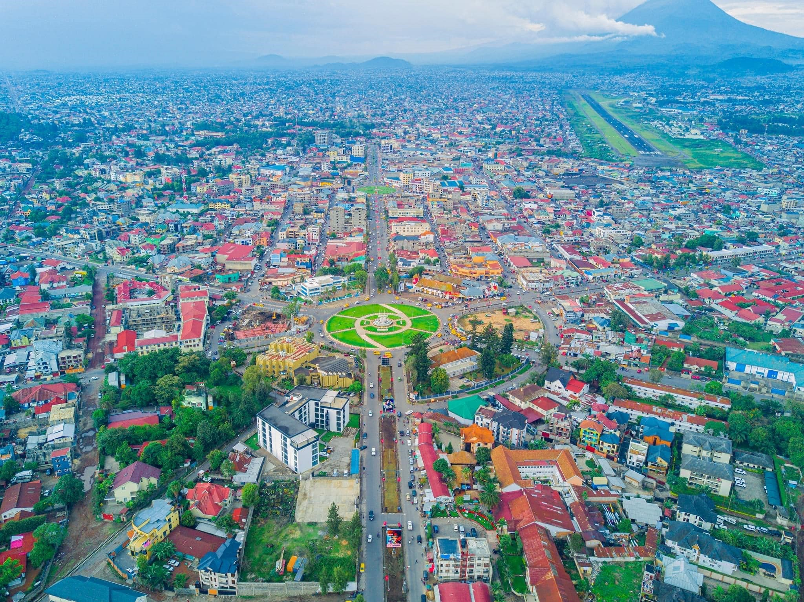
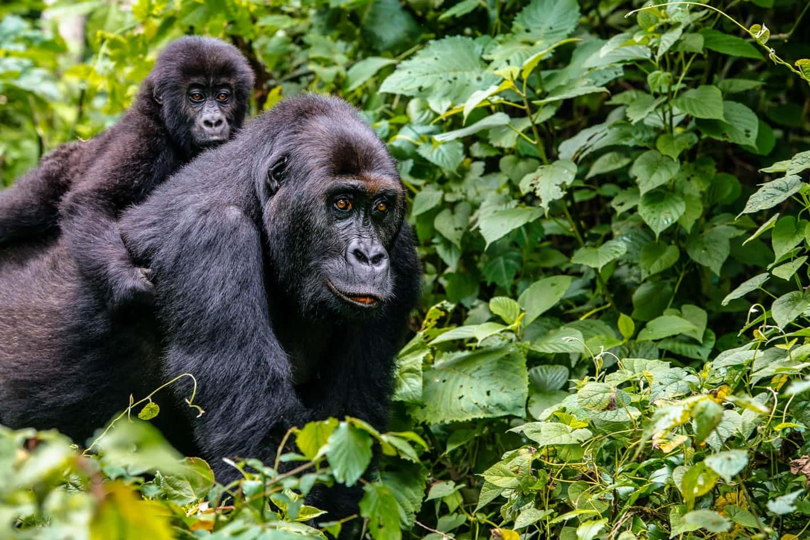

Lake Kivu sits on the border between the DRC and Rwanda at 1,460 metres above sea level. Stretching 90 km long and 50 km wide, with a maximum depth of 485 metres, it is one of Africa's Great Lakes. A boat tour from Goma takes you across calm blue-green waters past fishing villages, volcanic islands, and dramatic Virunga landscapes. Watch local fishermen cast their nets, stop at Monkey Island to spot vervet monkeys, hike up Napoleon Island to see a colony of fruit bats, and catch the sun sinking behind the volcanoes at dusk.
See Mount Nyiragongo and the Virunga volcanoes from a completely different angle — rising dramatically behind the city as your boat pulls away from shore.
Early morning light over the hills or the sun dropping behind the volcanoes at dusk — both are unforgettable moments best seen from the middle of the lake.
Watch Goma's fishing community at work — casting nets, singing as they row, and bringing in Sambaza fish from the lake's clear surface waters.
The second largest lake island in Africa, located on the DRC side. Accessible by boat from Goma — hike, birdwatch, and visit local villages rarely seen by tourists.
Lake Kivu is completely free of crocodiles and hippos, making it one of the safest lakes in Africa for swimming. Many lakeside spots near Goma are perfect for a dip.
Paddle along the calm Goma shoreline at your own pace — kayak and canoe excursions can be arranged for a more active experience on the water.

One of the most active volcanoes in the world, right at your doorstep.

Visas, transport, currency and local guides everything you need before you arrive in Goma

The oldest national park in africa, home to mountain gorillas and more.